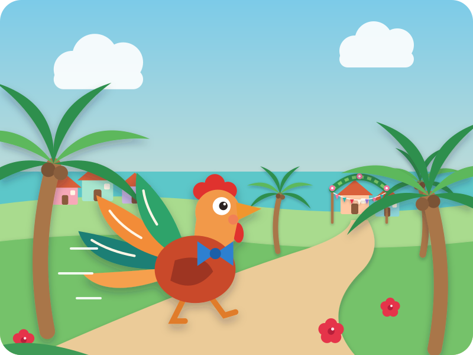
A folk tale from Cuba
The Rooster and the Wedding
"Story, story — are your ears open?" Kai: "Open!"
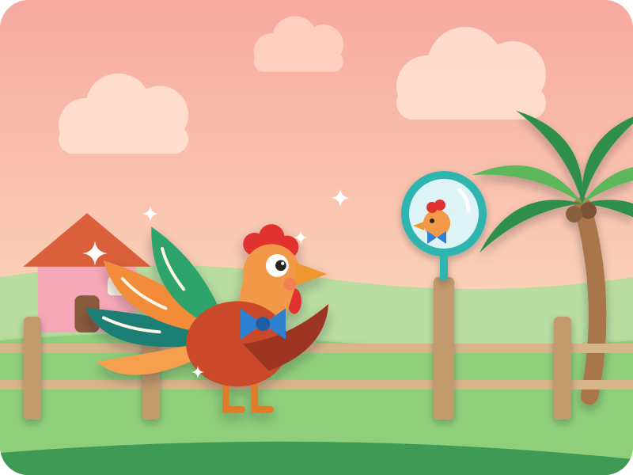
Once upon a time, on a sunny island far away, a Rooster woke up very, very excited.
"Today is my Uncle Perico's wedding!" He fluffed his shiny feathers, and put on his little blue bow tie.
¡Quiquiriquí! "kee-kee-ree-KEE!" — Kai crows
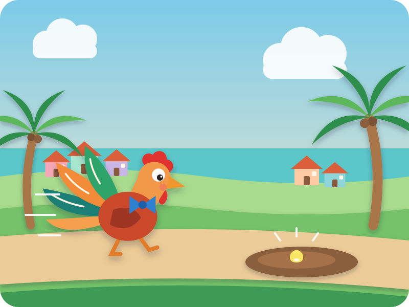
Off he went down the road — strut, strut, strut — looking very smart.
Then he saw it: one fat yellow corn kernel… lying in a muddy puddle. Yum!
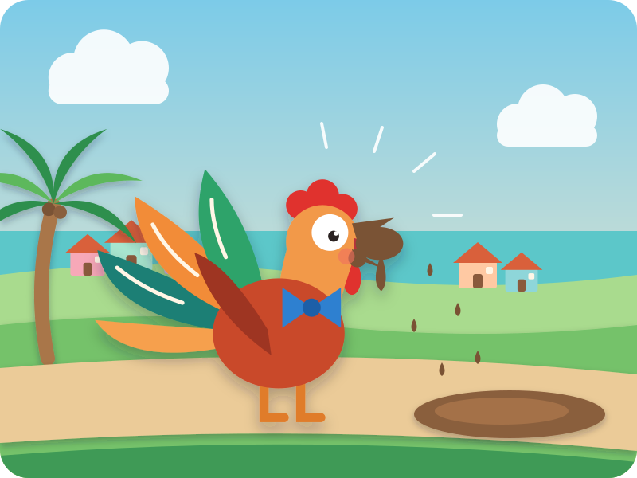
He couldn't help it. Peck!
Oh no! Now his beak was all covered in sticky brown mud. "I can't go to the wedding with a muddy beak!"
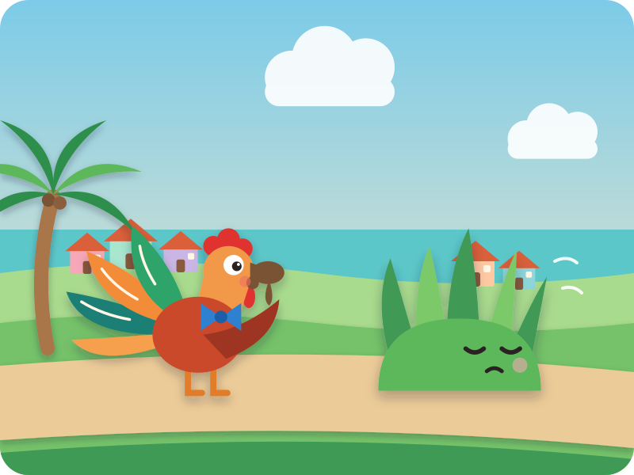
"Grass, Grass," said Rooster:
"Please, please, help me please — I'm going to my uncle's wedding!" Kai says it with Rooster
"Wipe your beak on me? No, thank you," said Grass, and turned away.
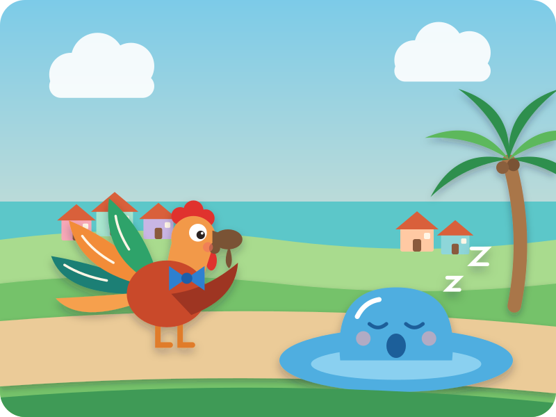
"Water, Water," said Rooster:
"Please, please, help me please — I'm going to my uncle's wedding!"
"Wash your beak? Not now," yawned Water. "I'm too sleepy."
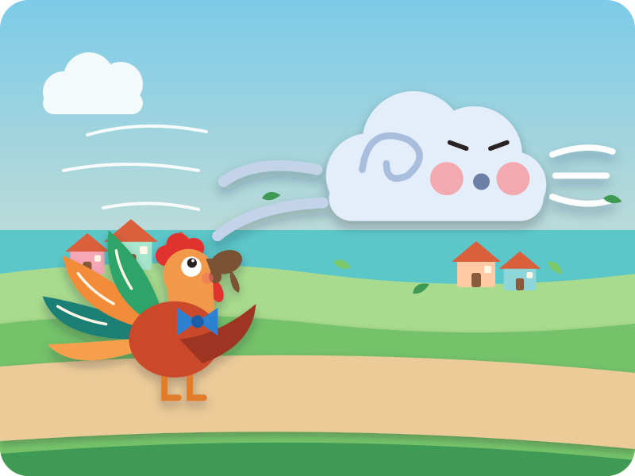
"Wind, Wind," said Rooster:
"Please, please, help me please — I'm going to my uncle's wedding!"
"Can't stop — busy blowing!" said Wind. Whoooosh! Kai blows
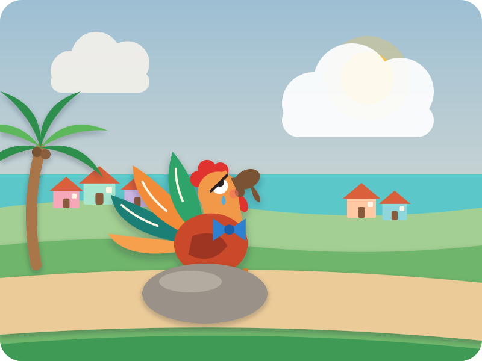
Poor Rooster sat down on a stone. Nobody would help. He looked up at the big blue sky…
"Sun, Sun," he whispered. "Please, please, help me please. I'm going to my uncle's wedding."
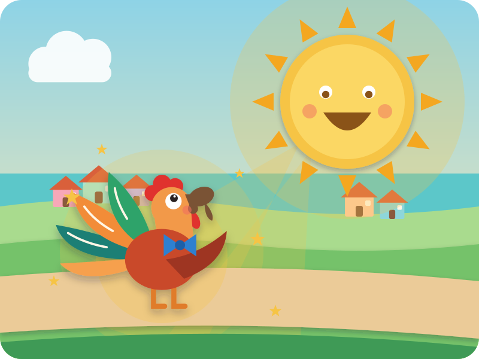
And the Sun smiled the biggest, warmest smile.
"Of course I'll help you, my friend!"
And the Sun shone down, golden and kind, on everybody.
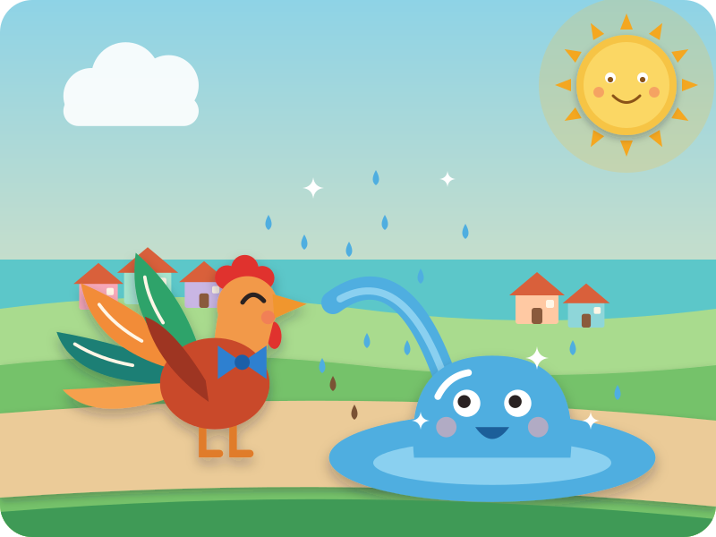
The warm sunshine woke up Water. "Oh! The Sun is helping — I'll help too!"
Splish, splash, splosh! Kai splashes his hands Rooster's beak was clean and shiny.
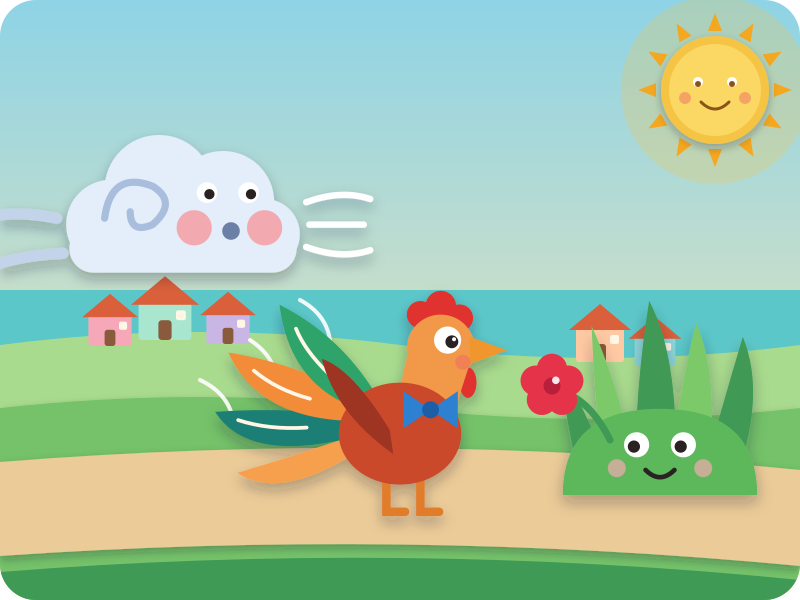
"Me too!" said Wind, and blew a soft, warm breeze — whoosh — to dry his feathers.
"And me!" said Grass, and gave him a bright red flower for his bow tie.
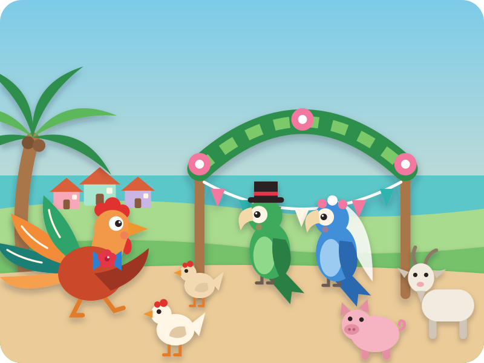
Rooster ran, strut-strut-strut, all the way to the wedding — just in time!
There was Uncle Perico the green parrot and his bride, the blue parrot. "You look wonderful!" they said.
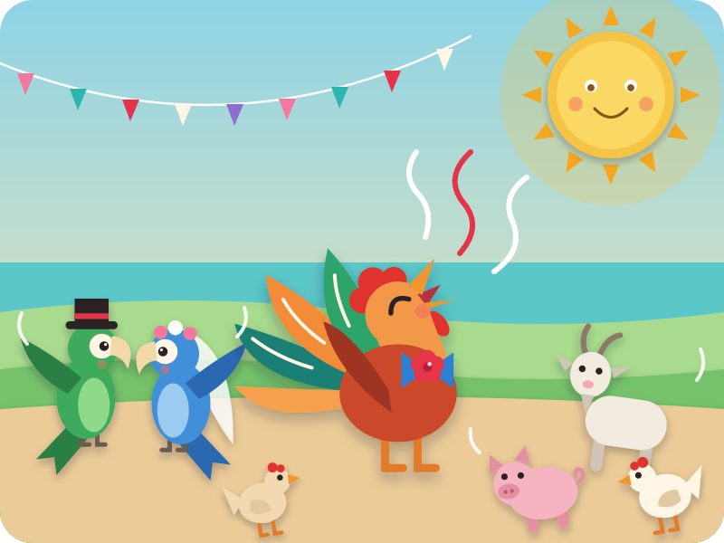
Then everyone danced, and Rooster sang the loudest, happiest song of all:
¡Quiquiriquí! everybody crows!
Because when one friend is kind, other friends want to be kind too.
The End
"Snip, snap, snout — this tale's told out."
Swipe back to read it again
Driving? Tell it without the page · six beats
The picture book is for home, bedtime, or a passenger. In the car, tell it from memory — bold is Kai's part.
- Rooster dresses up for Uncle Perico's wedding — ¡Quiquiriquí!
- On the way he pecks a corn kernel in a puddle — and gets a muddy beak.
- He asks Grass, Water and Wind: "Please, please, help me please — I'm going to my uncle's wedding!" Each one says no.
- He asks the Sun — and the Sun says, "Of course I'll help, my friend!"
- Now everyone helps: Water splashes his beak clean — splish, splash! — Wind dries him — whoosh! — Grass gives him a flower.
- He gets to the wedding just in time, and everyone dances — ¡Quiquiriquí!
After the story · car-friendly wondering
"Who helped Rooster first? And then who?"
"How did Rooster feel when nobody would help? And when the Sun said yes?"
"Who could YOU help today?"
Where this story comes from
El gallo de bodas ("the rooster on his way to the wedding") is a folk tale told across Cuba, Spain and Latin America, and is well known in English from Alma Flor Ada's picture book The Rooster Who Went to His Uncle's Wedding (1993). In the old telling it's a chain of threats: the rooster asks the grass to clean his beak, then a goat to eat the grass, a stick to beat the goat, fire to burn the stick and water to put out the fire — until his friend the Sun threatens to dry up the water, and everyone hurries to obey. This retelling is our own, for a 4-year-old: nobody threatens anybody — the Sun's kindness simply spreads. Roosters in Spanish don't say "cock-a-doodle-doo"; they say ¡quiquiriquí!